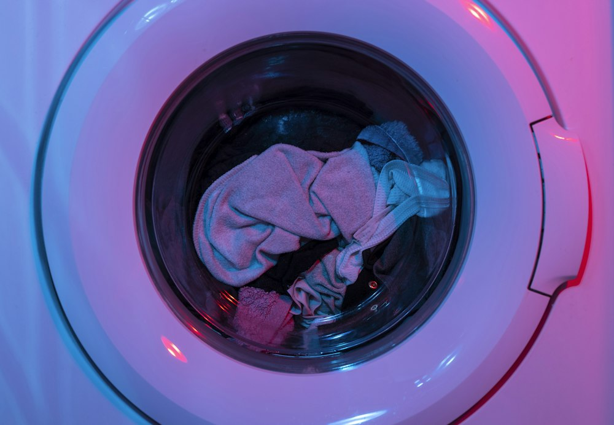

When your clothes dryer runs without heating, makes high-pitched screeching noises, or shuts down after ten minutes, our San Jose appliance technicians identify the failure quickly and restore safe, reliable drying performance.


Clothes dryers operate with high electrical currents or natural gas burners alongside high heat chambers and rapid centrifugal drum rotation. A failure in the thermal cutoff, safety bimetal thermostats, or exhaust air flow system can quickly render the appliance inoperable or create severe overheating hazards.
We service both electric 240V dryers and residential gas dryers across San Jose, ensuring all thermal protection sensors and mechanical assemblies operate in complete harmony.
If your dryer is displaying these symptoms, our technicians can evaluate and resolve the issue safely.
Broken coiled heating element on electric units, blown thermal limit fuse, failed gas burner igniter coil, or defective cycling thermostat.
Worn drum support rollers, dry idler pulley bearings, flat spots on rubber rollers, or worn front felt glide pads.
Snapped serpentine drum drive belt, jammed blower wheel housing, broken belt idler arm switch, or failed drive motor start winding.
Restricted vent duct causing thermal safety shutdown, motor overheating due to accumulated lint, or faulty thermistor.
Restricted internal airflow, weak heating element coil, failed moisture sensor bars, or restricted external vent hood flapper.
Defective door strike/latch switch, blown main thermal cut-off, failed push-to-start switch, or electronic control board relay fault.

When we service your clothes dryer in San Jose, we conduct a multi-point safety and functional inspection:
Clean the removable lint screen, check the exterior vent flap for lint blockages, and ensure double-pole circuit breakers (electric) or gas shutoffs are fully open.
If you detect a faint gas smell or the dryer cabinet feels scalding hot to the touch, discontinue use and disconnect power immediately.
Dispatched locally across San Jose, Santa Clara, Sunnyvale, and Campbell with convenient appointment scheduling.
Call (833) 327-1076 to speak directly with our team and book a technician visit for your dryer.